Voyage à Saint-Domingue, le berceau des pirates des Caraïbes
Avant de partir
La capitale de la République dominicaine grouille de vie. Il faut dire qu'elle a bien changé depuis qu'un certain 4 août 1496, Bartolomé Colomb, le frère du célèbre navigateur, fonda sur la rive est du fleuve Ozama celle qui allait devenir la plus ancienne ville du Nouveau Monde, la Nueva Isabela, baptisée ainsi en l'honneur d'Isabelle la Catholique.
Anéantie par un ouragan six ans plus tard, elle sera reconstruite par les colons espagnols, sur les berges occidentales cette fois, et prendra bientôt le nom de Saint-Domingue. Aujourd'hui, la circulation y est dense et folle, même dans les petites rues. La cacophonie ambiante est autant le fait des klaxons que des haut-parleurs des boutiques qui diffusent un merengue tonitruant. Avec 3 millions d'habitants, Saint-Domingue est la plus grande ville des Caraïbes.
Classée au patrimoine mondial de l'Unesco, la zone coloniale se visite à pied. Vous découvrirez alors des véritables trésors, vestiges d'une époque révolue où l'Espagne et la France, avaient la mainmise sur le pays.
La zone coloniale est un véritable enchantement pour tous ceux qui désirent se plonger dans l'histoire du pays. On peut y flâner à pied, faire les boutiques ou bien prendre un café sur une petite place ombragée.
À voir
La zone coloniale rassemble les plus anciens et les plus remarquables édifices du pays, pour certains cinq fois centenaires et donc les premiers d'Amérique. Trois artères regroupent les principaux centres d'intérêt de ce quartier, dont la célèbre Calle de las Damas, première rue du Nouveau Monde, et la calle de Conde, interminable rue piétonne reliant la cathédrale à la puerta del Conde. Situé Calle El Conde, face au Parc Colon, le musée de la ville coloniale présente le plus grand morceau d'ambre trouvé en République Dominicaine. Il expose aussi des fossiles d'ambre. Des expositions temporaires liées aux pierres y sont organisée. Un autre musée situé dans la Zone Coloniale expose des pièces uniques et organise des événements pour la conservation de l'ambre. A proximité de Saint-Domingue, n'hésitez pas à voir Boca de Nigua, les ruine d'une ancienne sucrerie, témoin de la première révolte des esclaves en 1796. Plus loin, à 48 km de Saint-Domingue, (environ une heure de route), vous pouvez dévaler les pentes des impressionnantes dunes de Bani, qui évoquent la dune du Pyla.
À faire
Du shopping sur la calle de Conde, visiter la cathédrale, le monument de Colon, les églises et couvents, flâner dans les ruelles du quartier colonial, chiner au Mercado Modelo, se perdre dans les ruelles aux façades colorées et balcons débordant de bougainvilliers, visiter les musées de la ville, faire un tour au quartier chinois avenida Duarte, visiter la zone coloniale en calèche ou en Chu Chu Colonial, petit train blanc. Le soir, vous pouvez écouter de la musique locale dans l'un des nombreux bars club, et un concert se déroule devant le monastère San Francisco chaque dimanche, qu'il pleuve ou qu'il vente ! Prendre le téléphérique, inauguré en juin 2018, dont le trajet complet de cinq kilomètres passe à deux reprises au-dessus de la rivière Ozama, offrant un superbe panorama.
Les plus
Les moins
La zone coloniale classée par l'Unesco.
L'absence de plage malgré la présence du littoral.
La vie nocturne endiablée.
La circulation
La qualité de l'hôtellerie.
EN IMAGES
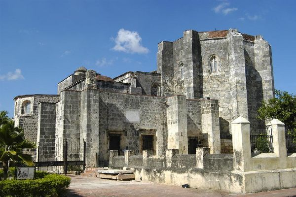
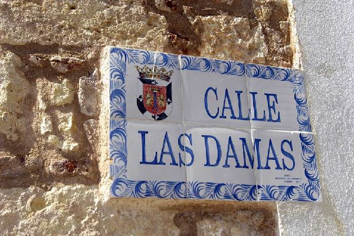
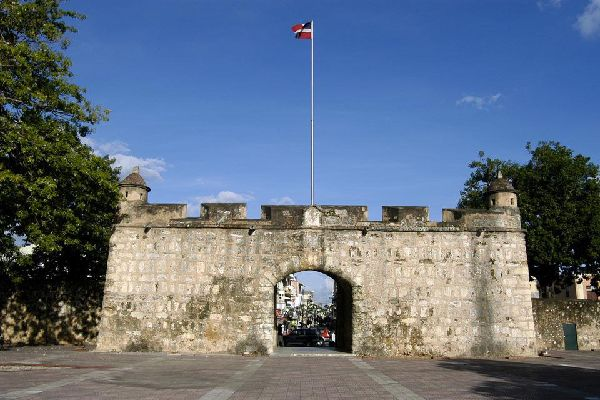
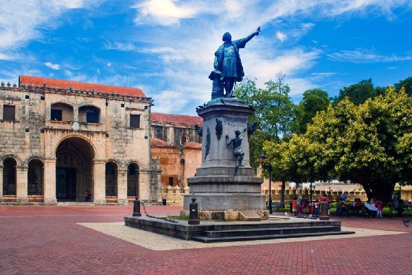
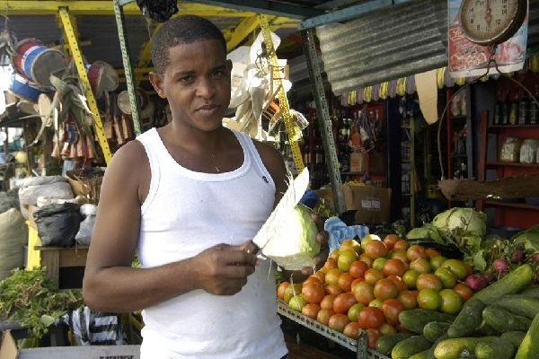
À penser
La zone coloniale, classée à l'Unesco, regroupe les principaux centres d'intérêt de Saint-Domingue et se parcourt facilement à pied. Bannissez la voiture ou le taxi et découvrez tous ses trésors à pied, en flânant au détour de ses rues, à moins que vous ne préfériez le chu chu colonial, petit train touristique qui vous permet d'admirer en 45 minutes les principaux points d'intérêts du quartier colonial.
À éviter
La petite plage publique de sable noir située près du monument Anto Montesino n'est pas recommandée pour la baignade. Privilégiez les plages de Boca Chica, elles ne sont qu'à 40 minutes de Saint-Domingue. Evitez les restaurants hors de prix pour touristes de la calle de Conde, et perdez-vous dans les ruelles alentours où vous trouverez des petites adresses sans prétention, fréquentées par des locaux. La nourriture est très correcte et copieuse à des prix dérisoire (3 euros, bière comprise !).
À déguster
Riche et épicée, la cuisine dominicaine est le fruit d'influences tour à tour créole, européenne et africaine. Les féculents (riz, patates douces, bananes " plantain "), les poissons et crustacés ainsi que les fruits tropicaux sont les aliments de base. Vous aurez sûrement l'occasion de déguster de la langouste ou du homard. Le plat typique, la bandera, se compose de riz blanc, fèves et haricots rouges, viande de ragoût boeuf ou poulet), accompagnée de salade et de bananes plantain frites (platanos frotos). Le rhum (Brugal et Barcelo) demeure l'alcool le plus prisé, servi pur (le plus vieux) ou en cocktail. Il existe deux marques de bière en République dominicaine : Brahma et Présidente (la meilleure !).
À rapporter
Les bijoux en ambre (résine brune solidifiée), en larimar (pierre bleuté), les objets en cuir, la vannerie, les peintures naïves, héritage des indiens Taïnos, les CD de merengue et de bachata, les cigares, la vanille liquide, la confiture, le rhum et le café sont les principaux souvenirs que vous pouvez ramener. On en trouve partout, sur les plages et les marchés locaux, notamment. La calle de Conde regorge de souvenirs en tout genre, les plus originaux étant ces vieilles plaques d'immatriculation disposées à même le sol !
CONFORT MÉTÉO A ST DOMINGUE
Les indices météo fournis par Météo France représentent une famille de critères synthétisant les conditions météorologiques de St Domingue . Ces différents indices consistent à vous aider dans la préparation de votre voyage à St Domingue . Ainsi, choisissez les types d'activités en fonction des prévisions météo : plage, promenade, visite de monuments, musée, sports d'hivers...


 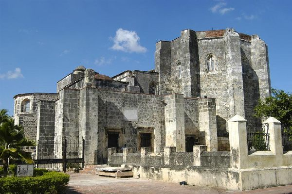
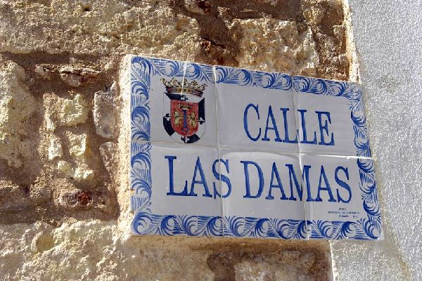
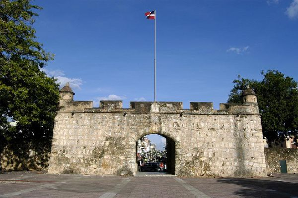
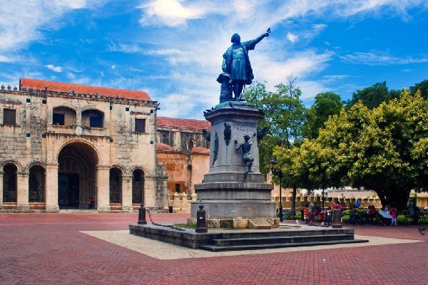
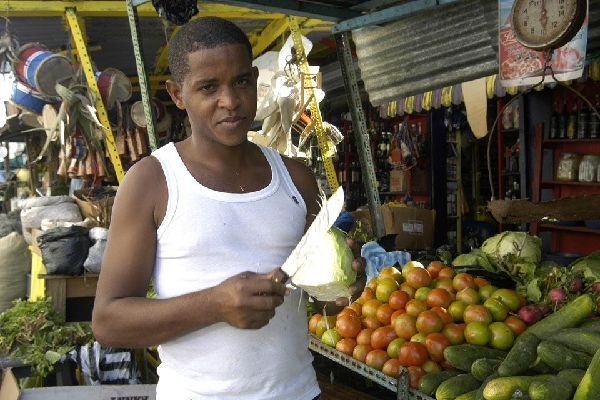
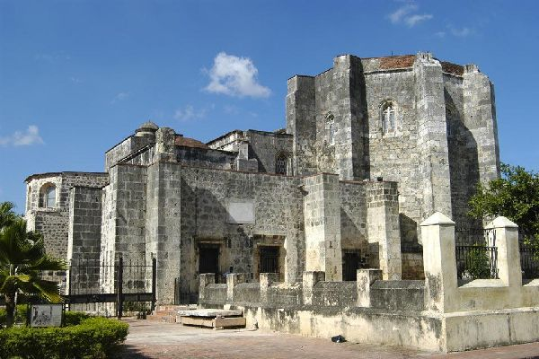
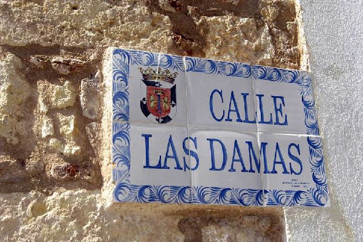
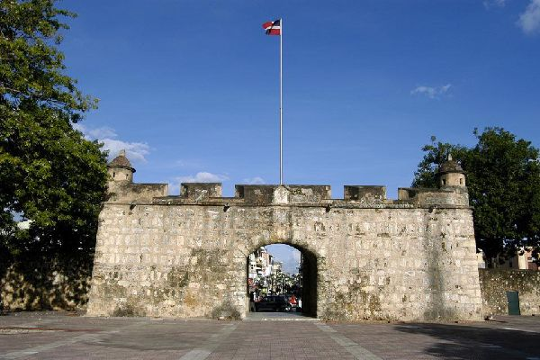
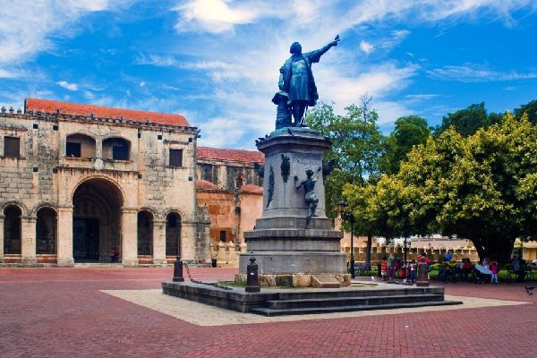
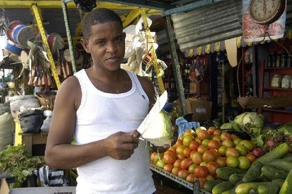